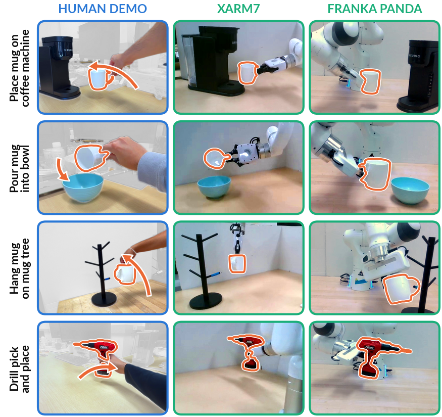
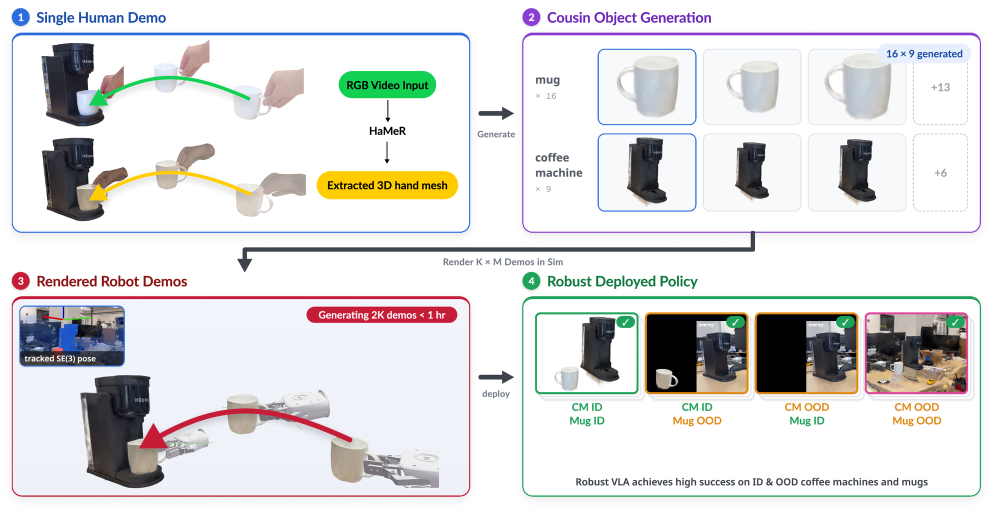
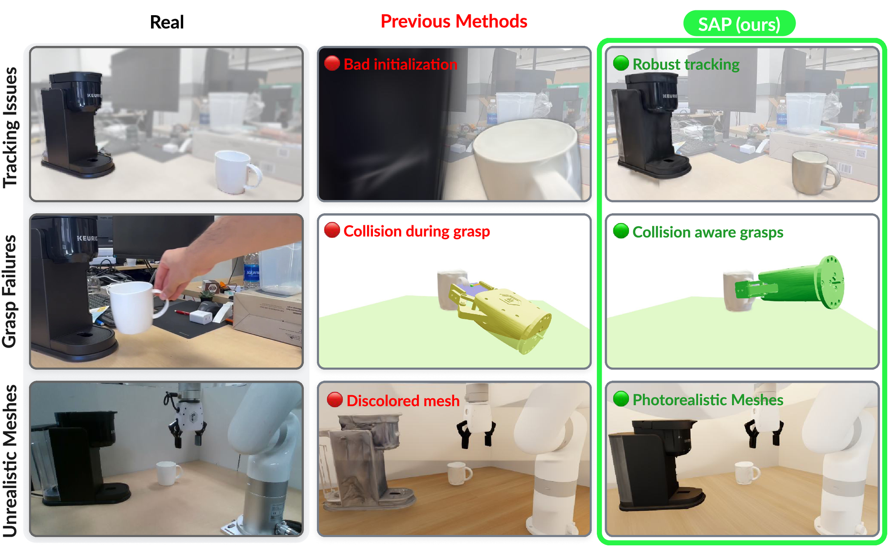
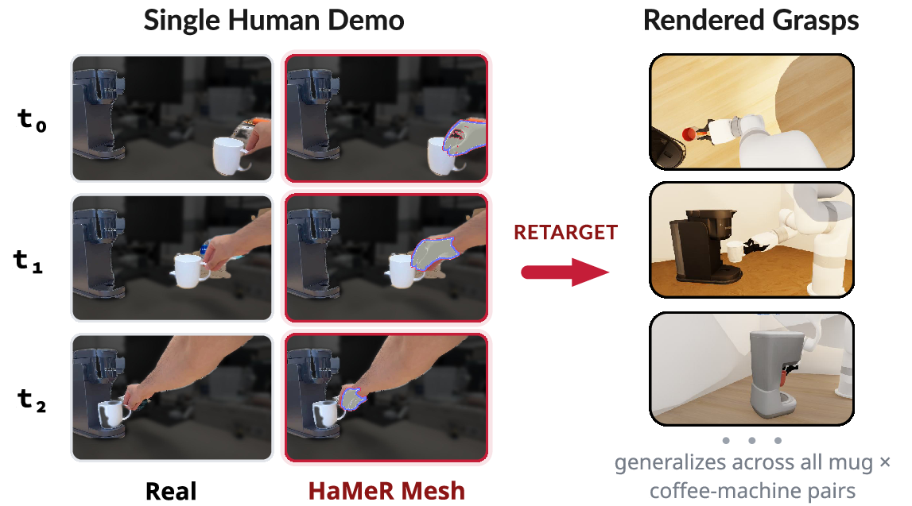
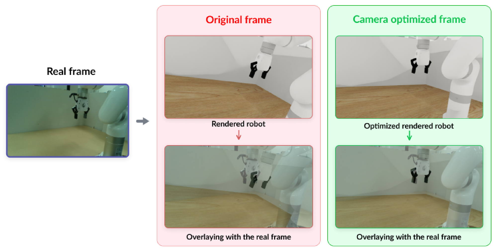
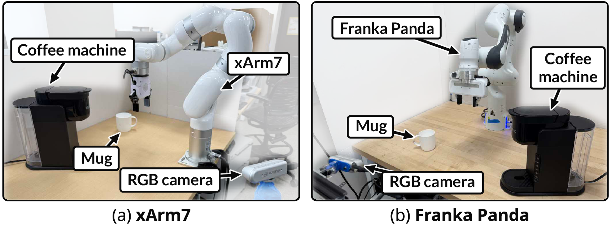
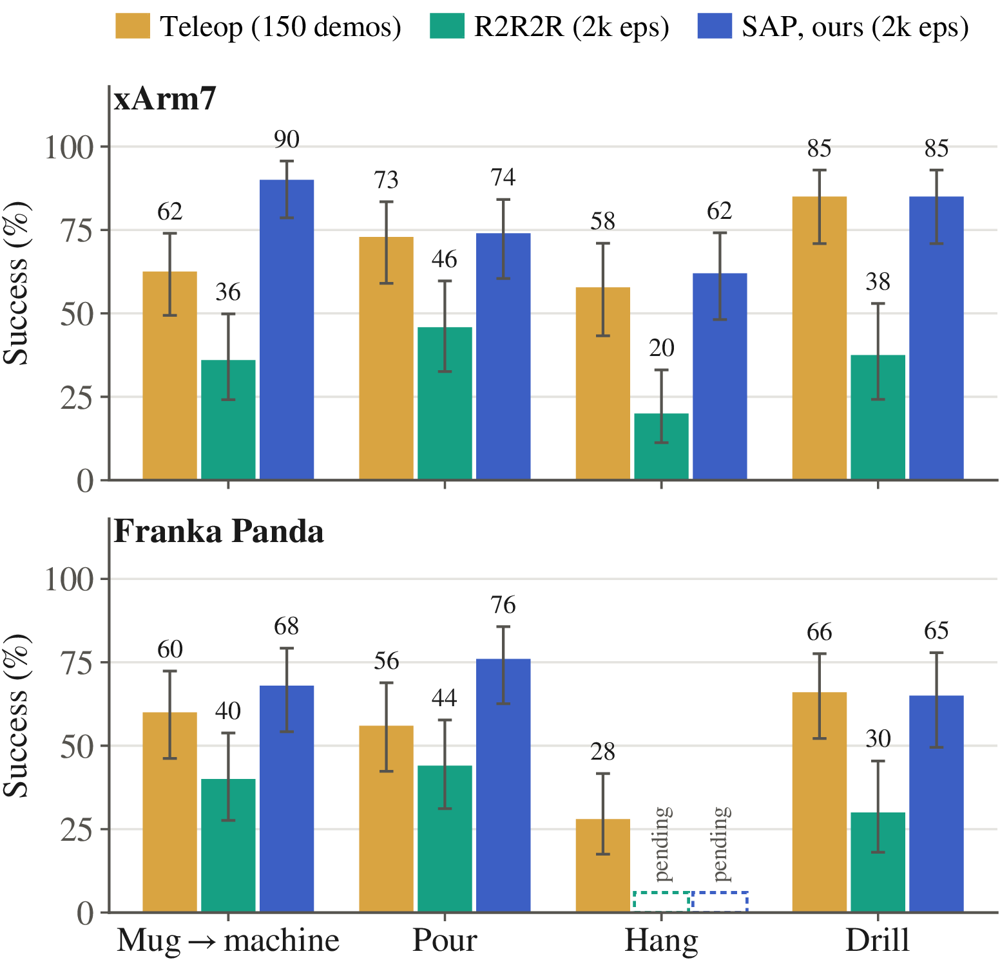
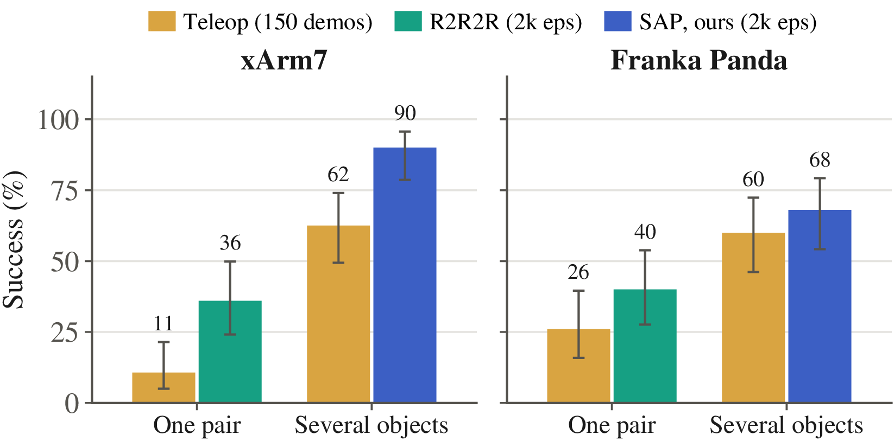
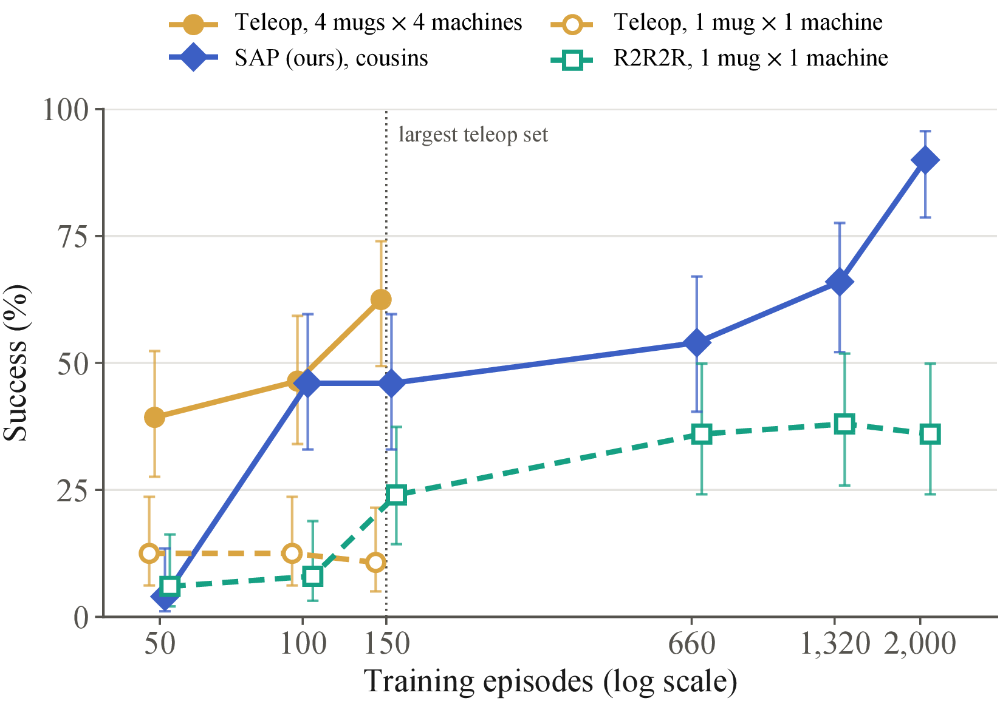
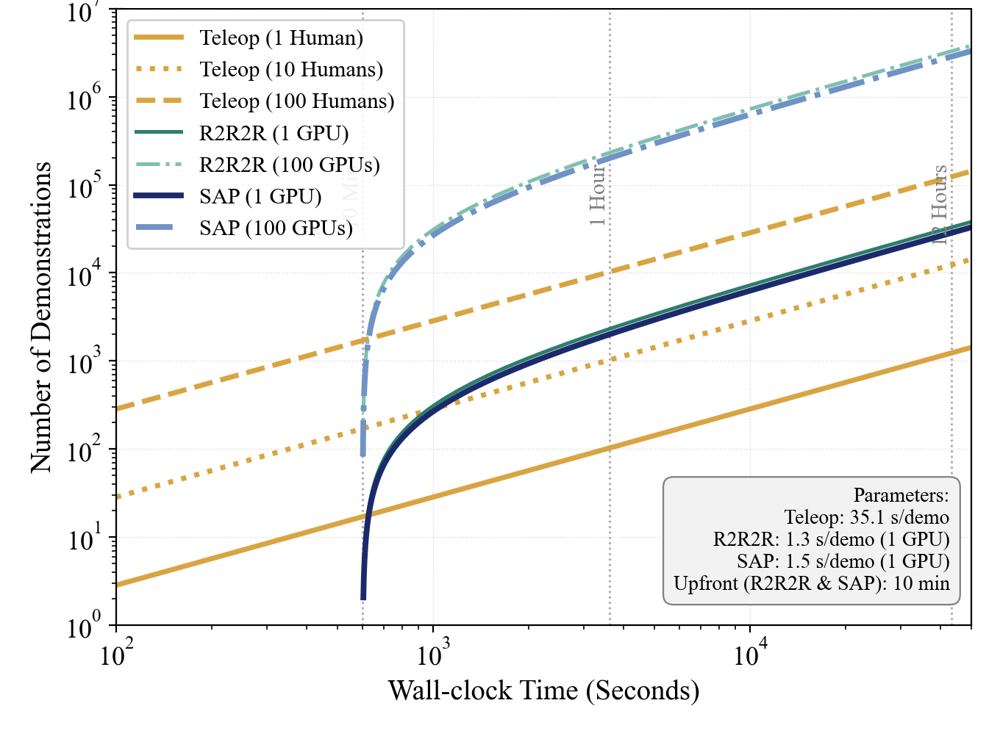

Real2Sem2Real
3D Semantic Augmentations for Robot Learning from a Single Human RGB Demonstration

Abstract
Learning from human video is a promising way to teach robots, as it scales easily and needs no robot hardware. Existing methods, however, require depth sensing, overlay the robot onto 2D video, or generate data only for the objects that were demonstrated.
Real2Sem2Real turns a single monocular RGB video of a human demonstration into thousands of robot demonstrations across the object instances of a category. It tracks the SE(3) pose of each object through the video with DINOv3-distilled Gaussian splats, outperforming WARPED and FoundationPose with estimated metric depth. It aligns digital cousins, each generated from a single or a few photographs, to the demonstrated objects with a semantic alignment that matches whole objects such as mugs as well as the functional regions of placement objects such as a coffee machine's tray or a bowl, and it recovers a robot grasp from the demonstrator's hand. The transferred demonstrations are generated in IsaacSim, with kinematic replay, or MuJoCo, with contact physics.
On two real robots, a vision-language-action policy trained on data from one human video performs on par with, and often better than, policies trained on teleoperated demonstrations across diverse object instances and four tasks. The semantics of vision foundation models thus come as a present, turning one human demonstration into category-level robot data.
Method

- 1. TrackAn RGB-only 4D object tracker built on DINO-distilled Gaussian splats follows every object through the human video.
- 2. Generate cousinsDigital cousins of each object are generated from one or a few photographs.
- 3. Align semanticallyCousins are aligned to the demonstrated objects by matching whole objects and the functional regions where objects are placed.
- 4. Render and trainThe demonstration is replayed for every cousin pairing in IsaacSim or MuJoCo, and a VLA policy is trained on the result.
Components
Robust tracking, grasps, and meshes

| Object | Ours | WARPED | FoundationPose (raw depth) |
|---|---|---|---|
| Mug (to coffee machine) | 0.949 | 0.890 | 0.820 |
| Coffee machine | 0.916 | 0.894 | 0.814 |
| Mug (to tree) | 0.904 | 0.000 | 0.210 |
| Tree stand | 0.840 | 0.712 | 0.295 |
| Mug (pour) | 0.935 | 0.900 | 0.245 |
| Bowl (pour) | 0.982 | 0.849 | 0.450 |
| Drill | 0.864 | 0.525 | 0.704 |
| Mean | 0.913 | 0.681 | 0.505 |
Demo-to-robot motion transfer

Camera alignment

Results
We fine-tune the π0.5 vision-language-action model on three kinds of data and evaluate on real robots: teleoperation (150 real demonstrations across several objects), R2R2R (2,000 generated episodes of the single demonstrated object pair, following Real2Render2Real), and Real2Sem2Real (2,000 generated episodes across digital cousins). The charts label our method SAP.





Citation
BibTeX will be posted with the paper.